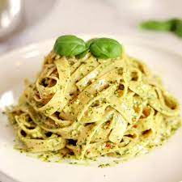

Pesto Pasta

Sometimes all you need in life is a simple and great dish.
This recipe is great for busy (or lazy!) people who still wish to make something by themselves instead of ordering.
Making the dish takes only 15 minutes and it servers two!
Here's what you need:
- Tagliatelle pasta, 250g
- Green pesto,1dl
- Mozzarella,125g
- Cherry tomatoes,250g
- Fresh basil
- Boil the pasta according to the instructions on the package. Drain the water and mix in the pesto.
- Cut the tomatoes in half, cut the the mozzarella. Mix them with the pasta. Add fresh basil, serve fresh!